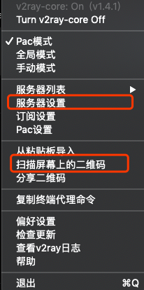
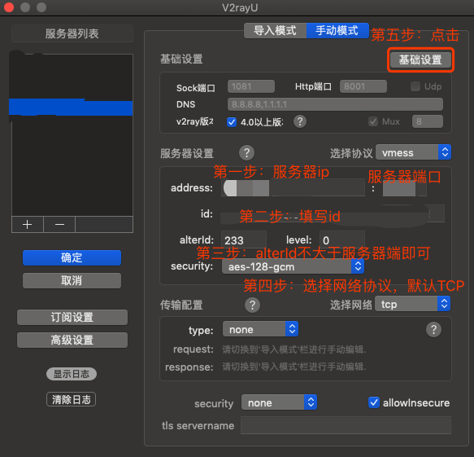
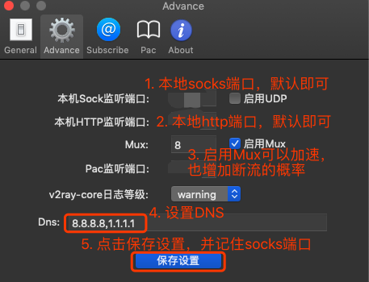

MacOS V2rayU 客户端配置3步教程
-
这里推荐Mac用户使用V2rayU这款客户端。有些其他的客户端没有二维码扫描的功能，这款V2rayU的客户端相对而言功能比较完善。
-
第一步：如果有配置的二维码，可以直接扫描二维码加载服务器设置。如果没有二维码，就点击“服务器设置”进入手动设置的界面。

-
第二步：没有二维码，则按照图示的步骤手动填写服务器的参数。最重要的几个参数：服务器IP，服务器端口，ID，alterId以及网络协议。默认网络协议为TCP，如果确认服务器端使用KCP则保持一致。

-
第三步：按照图示步骤设置本地使用的参数。其中最重要的是sock端口。
